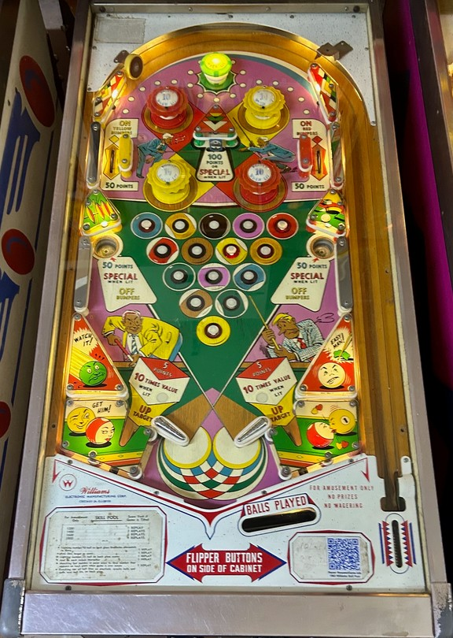

The upper left side lane scores 50 points and lights the yellow pop bumpers (upper right and lower left) for 10 points instead of 1, and lights the kicker behind the left flipper for 50 points instead of 5. The upper right side lane scores 50 points, lights the red pop bumpers (upper left and lower right), and lights the kicker behind the right flipper for 50 points instead of 5. Pop bumpers and kicker lanes are unlit if the ball is drained down either gobble hole, but not after a center drain.
Rollover buttons in the center of the playfield always score 1 point. Press a lit rollover button to unlight its corresponding pool ball. Unlighting all 15 pool balls completes a Rack. Unlike many billiards-themed games where you collect pool balls, there is no alternate way to spot progress; you have to press all of the buttons to complete the rack.
Progress on racks and pool balls is held over from ball to ball.
Gobble holes end the current ball in play and score 50 points, as well as a Special when lit, and also unlight all lit red or yellow pop bumpers. Unless the free game is important to you, draining down a gobble hole is never desirable.
There are no in or out lanes. Directly behind the flipper hinges are kicker lanes which fire the ball upwards diagonally across the playfield. Using a kicker scores 5 points, or 50 if the yellow (left kicker) or red (right kicker) bumpers are lit. The only ways to end a ball are a center drain or landing in a gobble hole. To compensate for this, the flippers are slightly wider apart than would be considered normal, and there is no center post feature.
There is no end of ball bonus or extra ball feature. As far as I have encountered, a Special always scores one free game. Tilt ends game.
The below picture of Skill Pool's playfield was taken from Pinside, where it is listed as image #3896158.
